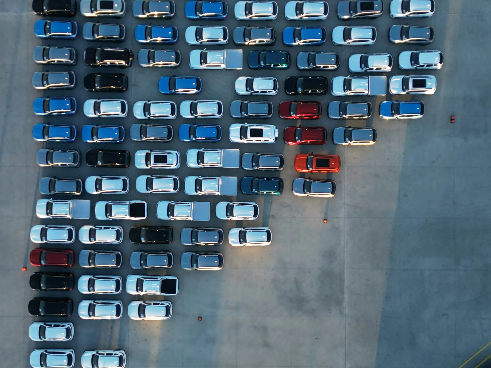
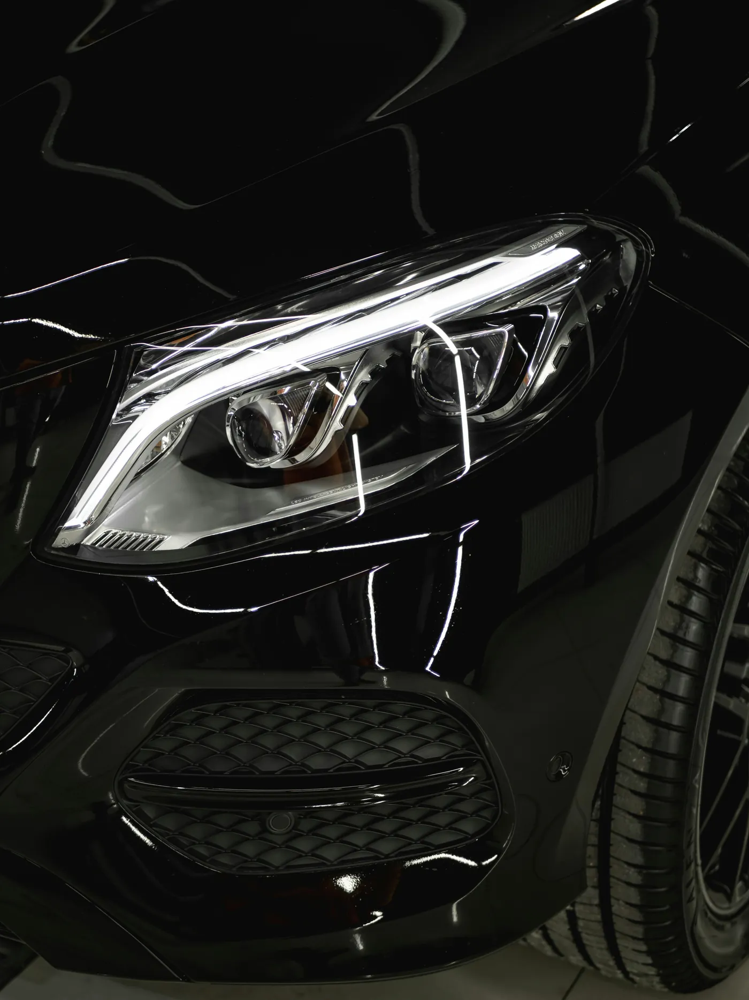
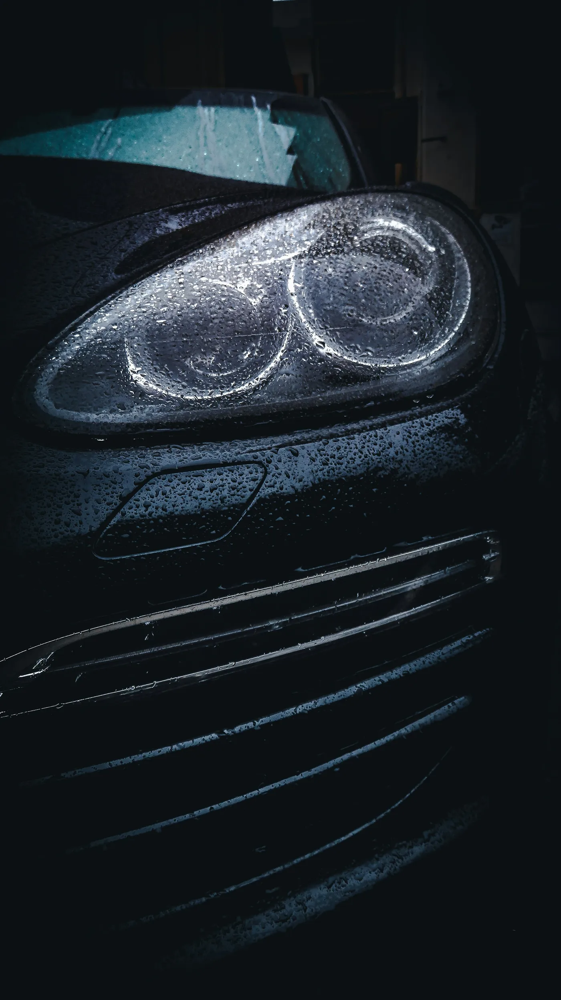
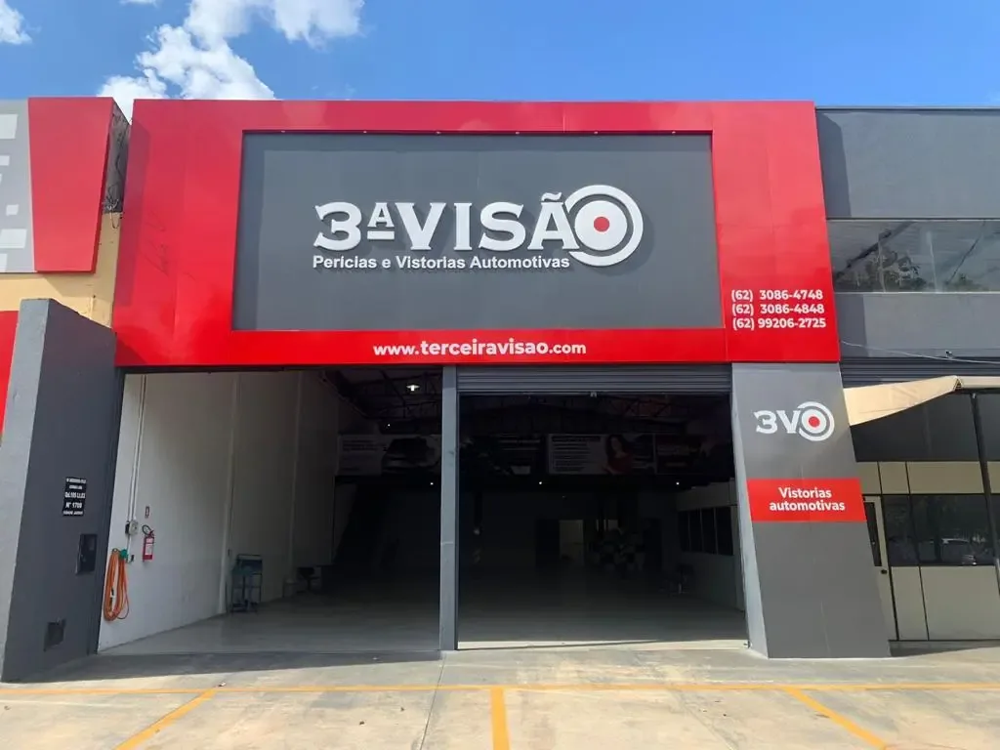

Core
Vistoria cautelar
Histórico, estrutura e procedência antes da compra.

Rede de franquias de vistoria automotiva. Três modelos, a partir de R$ 20 mil.
Cada detalhe conferido. Cada laudo, padronizado.
14milhões
de veículos comercializados por ano no Brasil.
A demanda por segurança na compra e venda de veículos cresce a cada ano. Por trás de um seminovo bem lavado pode haver muita coisa.

A vistoria é o que traz transparência entre vendedor e comprador e segurança jurídica na transferência.
Uma rede moderna, escalável e orientada a performance. Cada unidade opera com o mesmo processo, o mesmo sistema e o mesmo padrão de laudo.
Oferecer vistorias rápidas, seguras e confiáveis, superando a expectativa dos clientes.
Ser referência nacional em vistorias automotivas e modelo de franquia eficiente e rentável.
Ética e transparência. Excelência operacional. Agilidade e foco no cliente. Inovação contínua.
Várias fontes de receita por unidade, para clientes pessoa física e empresas.
Core
Histórico, estrutura e procedência antes da compra.
Core
Exigida para a troca de titularidade do veículo.

Core
Base técnica para precificar compra, venda e financiamento.
B2B
Rotina de inspeção para locadoras e empresas.
Premium
Escopo sob medida para cada cliente corporativo.

Diferencial
Numeração de identificação veicular gravada no chassi.
Diferencial
Para veículos sem numeração visível ou legível.
Diferencial
Laudo pericial com validade legal.
Atende revendas e concessionárias, locadoras e frotas, bancos e financeiras, despachantes, seguradoras e proteção veicular, e pessoas físicas.
Até aqui, o que toda boa vistoria faz.
Agora, o que quase ninguém faz.
Exclusivo das franquias Micro e Master
O NIV é o código único gravado no chassi e na carroceria. Gravar, regravar e periciar essa numeração é serviço exigido por seguradoras, Detran e instituições financeiras, com alto valor agregado e baixa concorrência.
Número de identificação veicularExemplo ilustrativo
9BV3VSTR1A2025814
Adulterar a numeração de identificação de um veículo é crime (art. 311 do Código Penal).
Três formatos para começar do tamanho certo. Royalties de 10% sobre o faturamento mensal em todos eles.
| DeliveryR$ 20.000 | MicroR$ 40.000 | MasterR$ 60.000 | |
|---|---|---|---|
| Operação | Enxuta e móvel | Híbrida, base e delivery | Completa e estruturada |
| Estrutura | Atendimento no local do cliente | Base operacional leve | Base física estruturada |
| Alcance | Baixo custo operacional | Atendimento local e externo | Maior potencial de faturamento |
| Serviços exclusivos | Estrutura simplificada | Gravação e regravação de NIV | Perito em ID veicular e NIV |
| Ideal para | Início rápido | Escalar com rentabilidade | Gestão de equipe e expansão |
| Royalties | 10% do faturamento | 10% do faturamento | 10% do faturamento |
| Escolher Delivery | Escolher Micro | Escolher Master |

Você entra com o investimento e a vontade de crescer. Treinamento, sistema e suporte já estão inclusos.
Google Ads Facebook e Instagram TikTok OLX e Mercado Livre SEO e e-commerce próprio WhatsApp Business integrado a CRM
Obrigado, . Um consultor da 3V vai falar com você em breve pelo telefone ou e-mail informado.